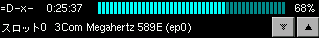

PAO用のデスクトップアクセサリ。
X11R6の環境下で動作するXParent特徴は以下の通りです。

最新版はxparent-20000123.tar.gzです。コンパイルするにはPAOがインストールされている必要があります。また、実行時にはAPMが有効化されている必要があります。
tar ballを展開後、環境に合うようにImakefileを編集してください。FreeBSDではNeedXPG4を定義するように変更します。shape extensionを使用しない場合は、次の行をコメントアウトしてください。
DUSE_SHAPE = -DUSE_SHAPE
あとはxmkmf -a ; makeで完了するはずです。
次のように起動します。
% setenv LANG ロケール名 % xrdb -merge リソースファイル % xparent
FreeBSDでは、実際には次のようになります。
% setenv LANG ja_JP.EUC % xrdb -merge XParent.ad % xparent
右端のボタンがカード無効化で、左ボタンがカード有効化です。shape extensionを使用している場合は、ウィンドウマネージャの設定を変更して、xparentのウィンドウ枠を描画しないようにしないと、画面のちらつきが激しいかもしれません。
全リソース一覧を用意しておきました。
サンプルのリソースファイルを参考に設定してください。